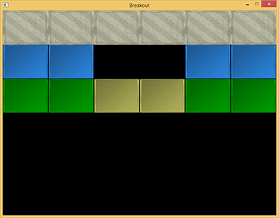
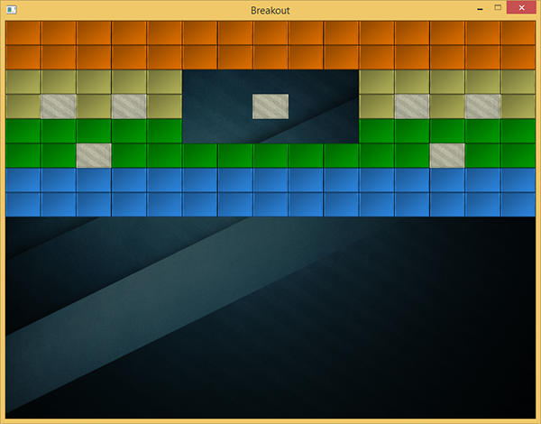
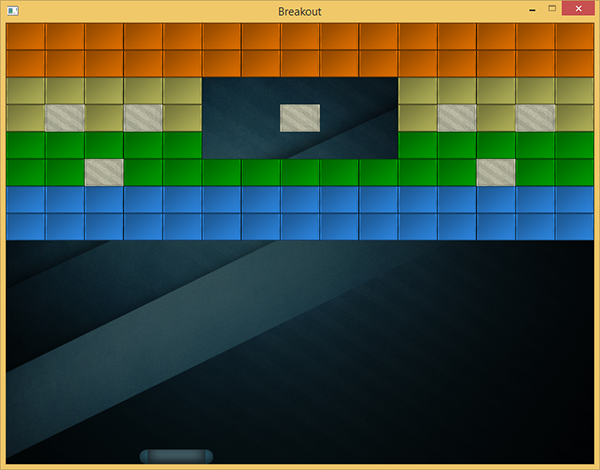

关卡
| 原文 | Levels |
|---|---|
| 作者 | JoeydeVries |
| 翻译 | 包纸 |
| 校对 | 暂无 |
Note
本节暂未进行完全的重写，错误可能会很多。如果可能的话，请对照原文进行阅读。如果有报告本节的错误，将会延迟至重写之后进行处理。
Breakout不会只是一个单一的绿色笑脸，而是一些由许多彩色砖块组成的完整关卡。我们希望这些关卡有以下特性：他们足够灵活以便于支持任意数量的行或列、可以拥有不可摧毁的坚固砖块、支持多种类型的砖块且这些信息被存储在外部文件中。
在本教程中，我们将简要介绍用于管理大量砖块的游戏关卡对象的代码，首先我们需要先定义什么是一个砖块。
我们创建一个被称为游戏对象的组件作为一个游戏内物体的基本表示。这样的游戏对象持有一些状态数据，如其位置、大小与速率。它还持有颜色、旋转、是否坚硬(不可被摧毁)、是否被摧毁的属性，除此之外，它还存储了一个Texture2D变量作为其精灵(Sprite)。
游戏中的每个物体都可以被表示为
Breakout中的关卡基本由砖块组成，因此我们可以用一个砖块的集合表示一个关卡。因为砖块需要和游戏对象几乎相同的状态，所以我们将关卡中的每个砖块表示为
class GameLevel
{
public:
std::vector<GameObject> Bricks;
GameLevel() { }
// 从文件中加载关卡
void Load(const GLchar *file, GLuint levelWidth, GLuint levelHeight);
// 渲染关卡
void Draw(SpriteRenderer &renderer);
// 检查一个关卡是否已完成 (所有非坚硬的瓷砖均被摧毁)
GLboolean IsCompleted();
private:
// 由砖块数据初始化关卡
void init(std::vector<std::vector<GLuint>> tileData, GLuint levelWidth, GLuint levelHeight);
};
由于关卡数据从外部文本中加载，所以我们需要提出某种关卡的数据结构，以下是关卡数据在文本文件中可能的表示形式的一个例子：
1 1 1 1 1 1
2 2 0 0 2 2
3 3 4 4 3 3
在这里一个关卡被存储在一个矩阵结构中，每个数字代表一种类型的砖块，并以空格分隔。在关卡代码中我们可以假定每个数字代表什么：
- 数字0：无砖块，表示关卡中空的区域
- 数字1：一个坚硬的砖块，不可被摧毁
- 大于1的数字：一个可被摧毁的砖块，不同的数字区分砖块的颜色
上面的示例关卡在被

void GameLevel::Load(const GLchar *file, GLuint levelWidth, GLuint levelHeight)
{
// 清空过期数据
this->Bricks.clear();
// 从文件中加载
GLuint tileCode;
GameLevel level;
std::string line;
std::ifstream fstream(file);
std::vector<std::vector<GLuint>> tileData;
if (fstream)
{
while (std::getline(fstream, line)) // 读取关卡文件的每一行
{
std::istringstream sstream(line);
std::vector<GLuint> row;
while (sstream >> tileCode) // 读取被空格分隔的每个数字
row.push_back(tileCode);
tileData.push_back(row);
}
if (tileData.size() > 0)
this->init(tileData, levelWidth, levelHeight);
}
}
被加载后的
void GameLevel::init(std::vector<std::vector<GLuint>> tileData, GLuint lvlWidth, GLuint lvlHeight)
{
// 计算每个维度的大小
GLuint height = tileData.size();
GLuint width = tileData[0].size();
GLfloat unit_width = lvlWidth / static_cast<GLfloat>(width);
GLfloat unit_height = lvlHeight / height;
// 基于tileDataC初始化关卡
for (GLuint y = 0; y < height; ++y)
{
for (GLuint x = 0; x < width; ++x)
{
// 检查砖块类型
if (tileData[y][x] == 1)
{
glm::vec2 pos(unit_width * x, unit_height * y);
glm::vec2 size(unit_width, unit_height);
GameObject obj(pos, size,
ResourceManager::GetTexture("block_solid"),
glm::vec3(0.8f, 0.8f, 0.7f)
);
obj.IsSolid = GL_TRUE;
this->Bricks.push_back(obj);
}
else if (tileData[y][x] > 1)
{
glm::vec3 color = glm::vec3(1.0f); // 默认为白色
if (tileData[y][x] == 2)
color = glm::vec3(0.2f, 0.6f, 1.0f);
else if (tileData[y][x] == 3)
color = glm::vec3(0.0f, 0.7f, 0.0f);
else if (tileData[y][x] == 4)
color = glm::vec3(0.8f, 0.8f, 0.4f);
else if (tileData[y][x] == 5)
color = glm::vec3(1.0f, 0.5f, 0.0f);
glm::vec2 pos(unit_width * x, unit_height * y);
glm::vec2 size(unit_width, unit_height);
this->Bricks.push_back(
GameObject(pos, size, ResourceManager::GetTexture("block"), color)
);
}
}
}
}
在这里我们用两个新的纹理加载游戏对象，分别为block纹理与solid block纹理。
{kind=link}
{kind=link}

这里有一个很好的小窍门，即这些纹理是完全灰度的。其效果是，我们可以在游戏代码中，通过将灰度值与定义好的颜色矢量相乘来巧妙地操纵它们的颜色，就如同我们在
因为支持任意数量的行和列，这个游戏关卡类给我们带来了很大的灵活性，用户可以通过修改关卡文件轻松创建自己的关卡。
在游戏中
我们希望在Breakout游戏中支持多个关卡，因此我们将在
class Game
{
[...]
std::vector<GameLevel> Levels;
GLuint Level;
[...]
};
这个教程的Breakout版本共有4个游戏关卡：
然后
void Game::Init()
{
[...]
// 加载纹理
ResourceManager::LoadTexture("textures/background.jpg", GL_FALSE, "background");
ResourceManager::LoadTexture("textures/awesomeface.png", GL_TRUE, "face");
ResourceManager::LoadTexture("textures/block.png", GL_FALSE, "block");
ResourceManager::LoadTexture("textures/block_solid.png", GL_FALSE, "block_solid");
// 加载关卡
GameLevel one; one.Load("levels/one.lvl", this->Width, this->Height * 0.5);
GameLevel two; two.Load("levels/two.lvl", this->Width, this->Height * 0.5);
GameLevel three; three.Load("levels/three.lvl", this->Width, this->Height * 0.5);
GameLevel four; four.Load("levels/four.lvl", this->Width, this->Height * 0.5);
this->Levels.push_back(one);
this->Levels.push_back(two);
this->Levels.push_back(three);
this->Levels.push_back(four);
this->Level = 1;
}
现在剩下要做的就是通过调用当前关卡的
{kind=link}
void Game::Render()
{
if(this->State == GAME_ACTIVE)
{
// 绘制背景
Renderer->DrawSprite(ResourceManager::GetTexture("background"),
glm::vec2(0, 0), glm::vec2(this->Width, this->Height), 0.0f
);
// 绘制关卡
this->Levels[this->Level].Draw(*Renderer);
}
}
结果便是如下这个被呈现的关卡，它使我们的游戏变得开始生动起来：

玩家挡板
此时我们在场景底部引入一个由玩家控制的挡板，挡板只允许水平移动，并且在它接触任意场景边缘时停止。对于玩家挡板，我们将使用以下纹理：
{kind=link}

一个挡板对象拥有位置、大小、渲染纹理等属性，所以我们理所当然地将其定义为一个
// 初始化挡板的大小
const glm::vec2 PLAYER_SIZE(100, 20);
// 初始化当班的速率
const GLfloat PLAYER_VELOCITY(500.0f);
GameObject *Player;
void Game::Init()
{
[...]
ResourceManager::LoadTexture("textures/paddle.png", true, "paddle");
[...]
glm::vec2 playerPos = glm::vec2(
this->Width / 2 - PLAYER_SIZE.x / 2,
this->Height - PLAYER_SIZE.y
);
Player = new GameObject(playerPos, PLAYER_SIZE, ResourceManager::GetTexture("paddle"));
}
这里我们定义了几个常量来初始化挡板的大小与速率。在
除此之外我们还需要在
Player->Draw(*Renderer);
如果你现在启动游戏，你不仅会看到关卡画面，还会有一个在场景底部边缘的奇特的挡板。到目前为止，它除了静态地放置在那以外不会发生任何事情，因此我们需要进入游戏的
void Game::ProcessInput(GLfloat dt)
{
if (this->State == GAME_ACTIVE)
{
GLfloat velocity = PLAYER_VELOCITY * dt;
// 移动挡板
if (this->Keys[GLFW_KEY_A])
{
if (Player->Position.x >= 0)
Player->Position.x -= velocity;
}
if (this->Keys[GLFW_KEY_D])
{
if (Player->Position.x <= this->Width - Player->Size.x)
Player->Position.x += velocity;
}
}
}
在这里，我们根据用户按下的键，向左或向右移动挡板(注意我们将速率与deltaTime相乘)。当挡板的x值小于0，它将移动出游戏场景的最左侧，所以我们只允许挡板的x值大于0时向左移动。对于右侧边缘我们做相同的处理，但我们必须比较场景的右侧边缘与挡板的右侧边缘，即场景宽度减去挡板宽度。
现在启动游戏，将呈现一个玩家可控制在整个场景底部自由移动的挡板。

你可以在下面找到更新后的